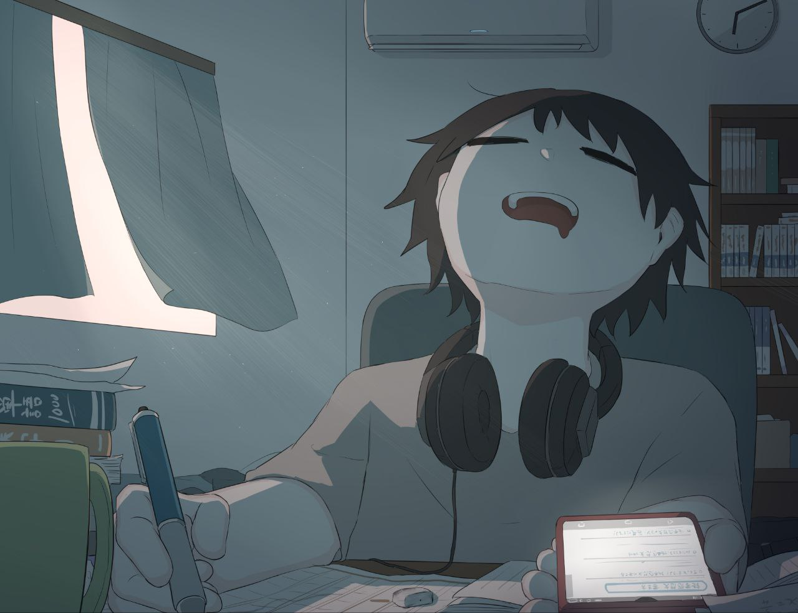

Skill
Video Editing
"I've had the opportunity to work with a few content creators , helping them bring their visions to life through dynamic video editing. While I still enjoy editing for fun and experimenting with new styles, my focus is now on refining my skills and exploring creative possibilities without the pressure of client work. Every project, big or small, is a chance to play with storytelling, pacing, and visual style."

Writing
"I’m a creative writer who loves turning ideas into stories people want to read. I work closely with clients to figure out what they need and shape the writing to fit their style. I focus on keeping things clear, engaging, and full of life. ’m flexible with tone, open to feedback, and always happy to work together to make the final piece exactly what it should be.”

digital Arts
"As a digital artist, I bring ideas to life with innovative techniques and a passion for creativity. I create concept art, illustrations, and digital pieces that combine artistic vision with technical precision, always pushing the boundaries of what's possible."